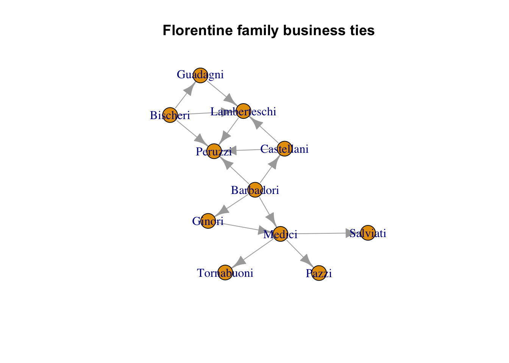

Code
data(florentine)Quinn He
March 29, 2023
Describe the many measures of centrality of at least one network of your choice.
For this challenge I am using the Florentine family business data set. This includes financial ties like loans, credits, partnerships, etc.
Based on the edge and vertex count, I see the network is quite small, but I expect this since the network of the Florentine family’s business ties is close knit and there are not many families in this well connected network.
The network is also both not bipartite and not weighted.
[1] FALSE[1] FALSE[1] TRUEBefore creating the basic data frame for the business network, let’s get a visual sense of the network we are looking at.

The Peruzzi, Lamberteschi, and Barbadori families all appear to conduct the most business with other families. The Medicis are essentially an intermediary for the Pazzi, Tornabuoni, and Salviati families. In this case, I would argue the Barbadori’s are the most powerful because they are appear to be sending loans, credit, etc. out to four families, while receiving none.
Below is the data frame that contains the information on the in/outdegree measurements for each of the the families. Based on the global transitivity scores, the network is pretty well connected just above 40% of connected triples in the network.
Compute at least one measure of centrality for each node, adding them as attributes to nodes in the form of extra columns: eigencentrality, betweenness, closeness, etc. Compute the distribution of at least one of those measures. What do we learn from comparing these measures of centrality with an equivalent random network (i.e. with the same number of edges and vertices)?
Below I add columns of eigenvector centrality measure, betweeness centrality, and closeness centrality
Betweenness measures essentially how important a node is within the context of the network. A node with a high betweenness score indicates it lies on the path of connection to many other nodes. It has a high awareness of what is going on in similar circles. Based on the visualization, the Barbadoris are in between two major clusters of families, almost acting as a bridge between the various nodes.
The Medici family fills a similar role, acting as the only connection the Pazzi, Salviati, and Tornabuoni families have to the rest of the network.
totdegree indegree outdegree globtrans avgtrans eigen between
Barbadori 4 0 4 0.4166667 0.5958333 0.8289579 25.0
Bischeri 3 0 3 0.4166667 0.5958333 0.7310627 2.5
Castellani 3 1 2 0.4166667 0.5958333 0.8305427 5.0
Ginori 2 1 1 0.4166667 0.5958333 0.4046458 0.0
Guadagni 2 1 1 0.4166667 0.5958333 0.4992669 0.0
Lamberteschi 4 3 1 0.4166667 0.5958333 0.9235790 6.0
Medici 5 2 3 0.4166667 0.5958333 0.5120959 24.0
Peruzzi 4 4 0 0.4166667 0.5958333 1.0000000 13.5
Pazzi 1 1 0 0.4166667 0.5958333 0.1545184 0.0
Salviati 1 1 0 0.4166667 0.5958333 0.1545184 0.0
Tornabuoni 1 1 0 0.4166667 0.5958333 0.1545184 0.0
close
Barbadori 0.08333333
Bischeri 0.33333333
Castellani 0.50000000
Ginori 0.14285714
Guadagni 0.33333333
Lamberteschi 1.00000000
Medici 0.33333333
Peruzzi NaN
Pazzi NaN
Salviati NaN
Tornabuoni NaNHere is the distribution of the eigenvector centrality, closeness centrality, and betweenness for the florentine families business network. Since the network is small, most of the nodes are well connected, but there are a few with low eigenvector centrality, which would show that some nodes are not influential to many others in the network.
Most nodes are well spread out around the network, with only a small amount possessing a large closeness score.
This histogram shows that most nodes have a low betweenness centrality, but a few nodes have over 20 connections. The nodes with a high value of betweenness indicate they are highly influential within the network.
---
title: "Week 4 Challenge"
author: "Quinn He"
description: "Centrality of a Network"
date: "03/29/2023"
format:
html:
toc: true
code-fold: true
code-copy: true
code-tools: true
# editor: visual
categories:
- challenge_4
---
```{r}
#| label: setup
#| include: false
library(tidyverse)
library(igraph)
library(sna)
library(ergm)
```
## Challenge Overview
Describe the many measures of centrality of at least one network of your choice.
For this challenge I am using the Florentine family business data set. This includes financial ties like loans, credits, partnerships, etc.
```{r}
data(florentine)
```
```{r}
florb <- graph_from_data_frame(flobusiness, directed = TRUE)
```
Based on the edge and vertex count, I see the network is quite small, but I expect this since the network of the Florentine family's business ties is close knit and there are not many families in this well connected network.
```{r}
vcount(florb)
```
```{r}
ecount(florb)
```
The network is also both not bipartite and not weighted.
```{r}
is_bipartite(florb)
is_weighted(florb)
is_directed(florb)
```
Before creating the basic data frame for the business network, let's get a visual sense of the network we are looking at.
```{r}
plot(florb,
layout = layout_components(florb),
edge.arrow.mode = 2,
vertex.label.font = 1,
main = "Florentine family business ties")
```
The Peruzzi, Lamberteschi, and Barbadori families all appear to conduct the most business with other families. The Medicis are essentially an intermediary for the Pazzi, Tornabuoni, and Salviati families. In this case, I would argue the Barbadori's are the most powerful because they are appear to be sending loans, credit, etc. out to four families, while receiving none.
Below is the data frame that contains the information on the in/outdegree measurements for each of the the families. Based on the global transitivity scores, the network is pretty well connected just above 40% of connected triples in the network.
```{r}
florb.nodes <- data.frame(
totdegree = igraph::degree(florb),
indegree = igraph::degree(florb, mode = "in", loops = F),
outdegree = igraph::degree(florb, mode = "out", loops = F),
globtrans = igraph::transitivity(florb, type = "global"),
avgtrans = igraph::transitivity(florb, type = "average")
)
```
## Centrality
Compute at least one measure of centrality for each node, adding them as attributes to `nodes` in the form of extra columns: eigencentrality, betweenness, closeness, etc. Compute the distribution of at least one of those measures. What do we learn from comparing these measures of centrality with an equivalent random network (i.e. with the same number of edges and vertices)?
```{r}
florb.in.central <- centr_degree(florb, loops = FALSE, mode = "in")
florb.out.central <- centr_degree(florb, loops = FALSE, mode = "out")
florb.total.central <- centr_degree(florb, loops = FALSE, mode = "total")
```
Below I add columns of eigenvector centrality measure, betweeness centrality, and closeness centrality
```{r}
florb.nodes$eigen <- eigen_centrality(florb)$vector
florb.nodes$between <- igraph::betweenness(florb, directed = F)
florb.nodes$close <- igraph::closeness(florb, mode = "out")
```
Betweenness measures essentially how important a node is within the context of the network. A node with a high betweenness score indicates it lies on the path of connection to many other nodes. It has a high awareness of what is going on in similar circles. Based on the visualization, the Barbadoris are in between two major clusters of families, almost acting as a bridge between the various nodes.
The Medici family fills a similar role, acting as the only connection the Pazzi, Salviati, and Tornabuoni families have to the rest of the network.
```{r}
florb.nodes
```
Here is the distribution of the eigenvector centrality, closeness centrality, and betweenness for the florentine families business network. Since the network is small, most of the nodes are well connected, but there are a few with low eigenvector centrality, which would show that some nodes are not influential to many others in the network.
```{r}
hist(florb.nodes$eigen)
```
Most nodes are well spread out around the network, with only a small amount possessing a large closeness score.
```{r}
hist(florb.nodes$close)
```
This histogram shows that most nodes have a low betweenness centrality, but a few nodes have over 20 connections. The nodes with a high value of betweenness indicate they are highly influential within the network.
```{r}
hist(florb.nodes$between)
```